ยืมมาจาก Solo Leveling เฉพาะกลไกของแนวเรื่อง (ประตูมิติ ฮันเตอร์แรงก์ E–S ดันเจี้ยน ระบบที่มองเห็นได้คนเดียว กิลด์ ภารกิจประจำวัน) กับวิธีคุมจังหวะเรื่อง ตัวละคร ชื่อ ฉาก และบทพูดแต่งขึ้นใหม่ทั้งหมด จั่วม่อใช้นิสัยตามนิยาย มหาศึกสามภพ
ปมตั้งต้น
- สิบสองปีก่อน "ประตูฟ้า" เปิดขึ้นทั่วนครเจียงหลินซึ่งเป็นมหานครยุคใหม่ อีกฟากของประตูคือเศษเสี้ยวของโลกบำเพ็ญเพียรโบราณที่แตกออกเป็นชิ้น ๆ
- ในประตูมีสัตว์ประหลาดที่คนเรียกตามตำราเก่าว่า "เยา" ในซากเยามี หินวิญญาณ ซึ่งกลายเป็นทั้งพลังงานของเมือง ยา และเงินตรา
- สองปีก่อน หน่วยกู้ภัยพบจั่วม่อสลบอยู่ริมประตูที่เพิ่งปิดลง เขาไม่มีความทรงจำ หน้าแข็งทื่อ และติดหนี้สมาคมค่ากู้ภัยกับค่ารักษา 3,260 หินวิญญาณ
- ทักษะที่สมาคมบันทึกไว้มีอย่างเดียวคือ [ฝนปรอย] รัศมี 3 ก้าว ไม่มีพลังโจมตี เขาจึงเป็นฮันเตอร์ที่อ่อนแอที่สุดในเมือง
- ความลับ: มือของเขาจำท่ามือเรียกฝน การพับกระเรียน และการดูเมล็ดข้าวปราณได้เอง ทั้งยังอ่านอักษรรากไม้โบราณออก ประตูบางบานรู้จักชื่อของเขา
แรงก์และโลก
- แรงก์ฮันเตอร์ E→S ทางโลกวัดด้วยเครื่องวัดค่าปราณของสมาคม ระบบของจั่วม่อแปลเป็นระดับการบำเพ็ญแทน
- E = เลี่ยนชี่ขั้น 1–3
- D = เลี่ยนชี่ขั้น 4–6
- C = เลี่ยนชี่ขั้น 7–9
- B = จูจี
- A = หนิงม่าย
- S = จินตันขึ้นไป
- สีประตู: E ฟ้าซีด, D เขียว, C เหลือง, B ส้ม, A แดง, S ม่วงดำ "ห้องซ่อน" คือพื้นที่ลับในประตูที่ค่าปราณสูงเกินแรงก์ของประตู และมักมี "กฎ" สลักไว้
- หินวิญญาณ มีระดับ 1–5 ระดับสาม 1 ก้อนเท่ากับระดับหนึ่ง 10,000 ก้อน เงินกระดาษ "เหรียญ" ยังใช้กันอยู่แต่ไม่มีใครอยากได้
- ใบอนุญาต: ถ้าค้างชำระหนี้จะถูกระงับใบอนุญาต และถูกส่งไปใช้แรงงานที่เหมืองประตูมิติหมายเลข 9 ซึ่งยังไม่มีใครทำงานครบ 1,000 วัน
- กิลด์: กิลด์ใหญ่จองประตูแรงก์ A ไว้หมด ส่วนทีมเล็กอย่างทีมหมาป่าเทาเก็บประตูแรงก์ E–D และจ้างลูกหาบแรงก์ E วันละ 5 หินวิญญาณ
หน้าต่างระบบ ("ทะเลจิต")
- เป็นแผ่นหยกบางสีเขียวอ่อน ใสเหมือนน้ำแข็ง ลอยเอียงราว 15° ระดับสายตา มองเห็นได้คนเดียว มีแสงจริงสะท้อนบนหน้าเขา
- ตัวหนังสือเป็นอักษรรากไม้สีทอง พาดหัวสีทองเข้ม และ คำว่าค่าบริการเป็นสีแดงเสมอ
- ใช้คำศัพท์บำเพ็ญเพียร เช่น ระดับเลี่ยนชี่ ลมหายใจ และจุดชีพจร ภารกิจประจำวันเป็นงานไร่นาบวกงานฝึก เช่น "รดนาปราณ 1 หมู่ / ฟันกระบี่ไม้ 100 ครั้ง / สูดปราณ 1 ชั่วยาม"
- ถ้าทำภารกิจไม่ครบจะโดน "ฤดูแล้ง" คือปราณถูกดูดออกจนตัวแห้ง
- ระบบเก็บค่าบริการวันละ 1 หินวิญญาณ ถ้าไม่มีเงินจ่ายก็ลงเป็นหนี้ให้ เป็นมุกประจำเรื่องที่ยิงตรงนิสัยงกของเขา และเป็นปริศนาด้วยว่าใครเป็นคนเก็บเงินนี้
นักแสดง
| ตัวละคร | รูปลักษณ์ | บทบาท |
|---|---|---|
| จั่วม่อ | ดูหัวข้อถัดไป | ตัวเอก ฮันเตอร์แรงก์ E ลูกหาบ และชาวนาดาดฟ้า |
| เมิ่งซิ่ว | 24 ปี ผมหางม้าลวก ๆ แว่นกรอบกลมเลื่อนลงปลายจมูก คาร์ดิแกนเทาทับเครื่องแบบสมาคม ถือปากกาแดง เมื่อใช้ทักษะ [ตาหยก] ตาจะเป็นสีเขียวหยก | เจ้าหน้าที่ประเมินหินวิญญาณแรงก์ D ปากจัด ถือสมุดบัญชีหนี้ของเขา แต่แอบเตือนเขาเรื่องอันตราย ต่อไปจะเป็นคู่ค้าที่ต่อราคากันไม่จบ |
| เผิงจวิ้น | 30 กว่าปี ผมเกรียน เขี้ยวซ้ายสีทอง เสื้อโค้ทหนังเทาเก่า มีดพร้าใหญ่บนหลัง กลิ่นบุหรี่ | หัวหน้าทีมหมาป่าเทา แรงก์ C ยิ้มง่าย ใจดำ เป็นศัตรูคนแรกที่จั่วม่อจดชื่อไว้ว่า "เหยียจะรอเจ้า" |
| อาจู๋ | 16 ปี (ใบอนุญาตปลอมอายุเป็น 18) ผอม หมวกแก๊ปกับบูทใหญ่เกินตัว | ลูกหาบแรงก์ E มีน้องสาวต้องเลี้ยง "ติดครึ่งหินวิญญาณ" จั่วม่อมาตั้งแต่วันแรก เป็นคนที่ทำให้จั่วม่อใจอ่อนแบบที่เจ้าตัวไม่ยอมรับ |
| ป้าฉิน | ผมดัดหยิกฝอยขัดหม้อ ผ้ากันเปื้อน ถือชามบะหมี่ | เจ้าของตึก จ่ายค่าเรียกฝนเป็นไข่ แต่ทวงค่าเช่าเป็นเงิน |
| เฉาเอ้อร์ / หม่าต้า | คนหนึ่งผอมถือธนู อีกคนร่างยักษ์ถือโล่ | ลูกทีมหมาป่าเทา รอดเพราะซื้อเมล็ดข้าวจากจั่วม่อ แต่ยังติดเงินอยู่ |
| เสี่ยวหวง | กระเรียนกระดาษฟางสีเหลือง โครงไผ่ ลายยันต์ชาดคล้ายลูกอ๊อด รอยปะกาวที่ปีกซ้าย 3 แห่ง ปีกขวา 5 แห่ง และเพิ่มขึ้นทุกตอน | พาหนะของจั่วม่อ แบกได้ราว 200 กิโล เป็นของจากนิยายที่ยกมาทั้งตัว |
| หุ่นไล่กาแห่งทุ่งใต้บ่อ | สูงสองช่วงตัว งอบกร่อน ใต้งอบมืดสนิท ถือเคียวสนิม | ผู้คุมกฎของทุ่ง ตอนนี้มีอยู่ 36 ตัว และมีเสาว่างหนึ่งต้นที่สลักชื่อจั่วม่อไว้ |
ความสามารถตัวละคร
หลักคิด: พลังทุกอย่างเล็กและมีราคา ชัยชนะจึงต้องมาจากความงก ไหวพริบ และกฎของประตู ไม่ใช่พลังดิบ จั่วม่ออ่อนที่สุดในตอนเริ่ม ความสามารถของเขาเอามาจากนิยายเท่านั้น (เลขบรรทัด story.txt = "นิยาย", เลขบรรทัด ep01_novel.md = "EP1") ส่วนที่เป็นของครอสโอเวอร์ล้วนจะเขียนกำกับว่า [ครอสโอเวอร์]
| ตัวละคร | แรงก์ (เลี่ยนชี่) | อาวุธ | ทักษะ | จุดอ่อน | ทำไม่ได้ |
|---|---|---|---|---|---|
| จั่วม่อ | E (เลี่ยนชี่ขั้น 1, EP1 L696) | ไม่มี (มีดผ่าซากของลูกหาบ) | [ฝนปรอย], [แยกเมฆ], มือชาวนา, พับกระเรียน, อ่านอักษรรากไม้, ไออุ่นจากหัวใจ | ปราณน้อยมาก ร่างผอม ไม่มีพลังโจมตีเลย ใจอ่อนกับคนที่ติดเงินเขา | สู้ตรง ๆ ฆ่าเยา ป้องกันตัว บินเองโดยไม่มีเสี่ยวหวง |
| เมิ่งซิ่ว | D (เลี่ยนชี่ขั้น 4) | ปากกาแดง | [ตาหยก] | ไม่มีทักษะต่อสู้ ใช้ตานานแล้วปวดหัว | มองทะลุร่างคนเป็น สู้ เข้าประตูเอง |
| เผิงจวิ้น | C (เลี่ยนชี่ขั้น 8) | มีดพร้าใหญ่ | [ฟันพร้าวงกว้าง], แรงกายแรงก์ C | โลภ ไม่เคารพกฎ ไม่มีท่าระยะไกล | อ่านอักษรรากไม้ ฆ่าสิ่งที่งอกใหม่ได้ ทำนา |
| เฉาเอ้อร์ | D (เลี่ยนชี่ขั้น 5) | ธนู + เครื่องวัดปราณ | [ศรไม่พลาด] | ตัวบาง สู้ระยะประชิดไม่ได้ | ทำร้ายสิ่งที่ไม่มีเนื้อหนัง |
| หม่าต้า | D (เลี่ยนชี่ขั้น 6) | โล่เหล็กหนาสามนิ้ว | [โล่ภูผา] | ช้า ใจร้อน อ่านหนังสือโบราณไม่ออก | รับการโจมตีหนักเกินสองครั้ง |
| อาจู๋ | E (เลี่ยนชี่ขั้น 1) | ไม่มี | ยังไม่มีทักษะ (หูไว) | อายุ 16 ใบอนุญาตปลอม ตัวเล็ก ผ่าซากช้า | สู้ ใช้ปราณ |
| ป้าฉิน | คนธรรมดา ไม่มีปราณ | ทัพพี / ชามบะหมี่ | ทวงค่าเช่า ต่อรองด้วยไข่ | ไม่มีพลังใด ๆ | ทุกอย่างที่ต้องใช้ปราณ |
| เสี่ยวหวง | ยุทธภัณฑ์ระดับต่ำสุด (นิยาย 249-252) | — | ขยายตัวแล้วบิน, บรรทุก | กระดาษคุณภาพต่ำ ฉีกง่าย บินโซเซ | สู้ บินเร็ว บรรทุกเกิน ~200 กก. บินเองโดยไม่มีปราณ |
| หุ่นไล่กา 36 ตัว | เกินแรงก์ C (ห้องซ่อนค่าปราณ 5 เท่าของประตู, EP1 L325) | เคียวสนิม | [เก็บเกี่ยวผู้ผิดกฎ], [ฟางงอกคืน] | ถูกกฎผูกไว้ | ทำร้ายผู้ที่หว่านและรด ออกนอกทุ่ง |
| ทะเลจิต (ระบบ) | — | — | หน้าต่างหยก, ภารกิจประจำวัน, ฤดูแล้ง, เก็บค่าบริการ | งก (เก็บวันละ 1 หินวิญญาณ) | ให้ของฟรี สู้แทน ให้คนอื่นเห็น |
| หนูนาเขี้ยวเหล็ก | เยาแรงก์ E | เขี้ยวเงิน | กัด, มาเป็นฝูง | ทีมแรงก์ C–D ฆ่าได้ง่าย | ใช้เวท ออกนอกประตู |
จั่วม่อ (ตรวจกับนิยายแล้ว)
- [ฝนปรอย] คือ "เคล็ดเมฆฝนหล่นริน" ในโลกนี้ (นิยาย 151, 198-207) เป็นเวทเรียกฝนรดไร่ปราณ ไม่ใช่เวทต่อสู้ (นิยาย 1932-1937)
- ทำอะไรได้: เรียกเมฆเท่าผืนเสื่อแล้วโปรยฝนเส้นเงิน ต้นไม้ชูใบขึ้นทันตา (EP1 L103-115; ฝนเส้นเงิน นิยาย 1916)
- รัศมี 3 ก้าว ความเสียหาย 0 (EP1 L111) ใช้ได้ทุกครึ่งชั่วโมง (EP1 L247) ใช้ปราณเล็กน้อย
- ภาพ: ปราณบางเท่าเส้นผมไหลจากปลายนิ้ว (EP1 L105) เมฆสีเทาขาว ฝนเป็นเส้นสีเงิน
- ท่ามือ: นิยายครอสโอเวอร์เขียนว่า "ประสานตราที่หน้าอก ขยับสามท่า" (EP1 L103, L509) ใช้ชีต
spell_drizzle_v26 จังหวะ ซึ่งมีตราสามท่าอยู่ในจังหวะ 2-4: ยืนรวมปราณ → พนมมือที่อก → ประสานนิ้วหมุนข้อมือที่อก → ตรากระบี่ (ชี้นิ้วชี้กับนิ้วกลาง) ที่อก เมฆก่อตัว → ดันมือออกระดับอก ฝนตก → ลดมือ ยืนนิ่งในฝน
- [แยกเมฆ] เป็นการใช้ฝนปรอยแบบฝืน (EP1 L555-561)
- ทำอะไรได้: แบ่งปราณเป็น 5 สาย ส่งเมฆเท่าผ้าเช็ดหน้า 5 ก้อนไปลอยเหนือคน 5 คน
- ราคา: เลือดกำเดาไหล ต้องส่งปราณค้างไว้ตลอด ถ้าหยุดส่ง ฝนทุกก้อนหาย (EP1 L619)
- ท่ามือ: ประสานตราซ้ำที่อก (EP1 L555) ใช้ 6 จังหวะเดียวกับฝนปรอย ต่างกันที่จังหวะ 4 เมฆแตกเป็น 5 ก้อน และจังหวะ 6 มีเลือดกำเดา
- มือชาวนา เป็นทักษะติดตัว ไม่ต้องร่าย
- ปลูกข้าวปราณมาสองปี (นิยาย 1068-1070, 1916)
- ดมกับบดเมล็ดแล้วรู้ว่าเป็นข้าวปราณพันธุ์ดีที่ยังงอกได้ (EP1 L293-295) และผ่าซากเยาได้เร็วกว่าอาจู๋สามเท่า (EP1 L285)
- พับกระเรียนกระดาษ พับเสี่ยวหวงเองได้ (นิยาย 224-231, 1799-1801; EP1 L141) แต่ต้องใช้เวลาและปราณ เมื่อหมดแรงต้องพักราวครึ่งชั่วยามก่อนจึงจะพับได้ (นิยาย 1799-1801)
- อ่านอักษรรากไม้ [ครอสโอเวอร์] อ่านศิลาและแผ่นหยกออกคนเดียว (EP1 L389-393, L687-689) นิยายเล่ม 1 ไม่มีเรื่องนี้ เป็นปมลึกลับของภาคนี้ (ไบเบิลหัวข้อ "ปมตั้งต้น")
- ไออุ่นจากหัวใจ เป็นพลังที่ควบคุมไม่ได้ จะออกมาเองเมื่อใกล้ตายเท่านั้น
- "กระแสพลังอบอุ่น…หลั่งรินออกมาจากส่วนลึกในหัวใจ…เข้าสู่เส้นชีพจร" (นิยาย 1730-1737; EP1 L683)
- ภาพ: แสงส้มอุ่นไหลจากหัวใจเข้าเส้นชีพจร (สคริปต์ช่อง 89)
- ห้ามใช้เป็นท่าไม้ตายที่เรียกได้ตามใจ
- ตา ตาดำ (นิยาย 6858) ตาเทาขาวกับตาแดงยังห้ามใช้จนกว่าจะถึงตอนหลัง
- ทำไม่ได้
- โจมตี ป้องกัน หรือฆ่าเยา จนกว่าจะถึงตอน 6 (EP1 L111; ตอน 5 ในแผนแพ้เพราะเหตุนี้)
- เรียกฝนถี่กว่าครึ่งชั่วโมงโดยไม่จ่ายราคา
- บินโดยไม่มีเสี่ยวหวง
- ฆ่าคน (นิยาย 7309-7318)
- การเติบโต (ตามแผน 12 ตอน)
- ตอน 2: หุ่นไล่กาเชื่อฟังเขาเฉพาะในทุ่ง
- ตอน 6: [ฝนเข็ม] [ครอสโอเวอร์ ไม่มีในนิยาย] มีเค้ามาจากนิยายสองอย่าง ภาพควรอิงสองอย่างนี้ ห้ามคิดเอฟเฟกต์ใหม่
- ขั้นที่ 4 ของเคล็ดเมฆฝนหล่นริน เป็นฝนที่ "มีชีวิต" และมีรุ้งหลังฝนหยุด (นิยาย 1893-1925, 3026-3030)
- ปราณทองคำคร่ำคร่าที่กลายเป็นกระบี่เท่าเมล็ดข้าว (นิยาย 5296-5302)
- ตอน 8: ขึ้นแรงก์ D
ตัวละครใหม่ (ต้องตรงกับ EP1)
- เมิ่งซิ่ว: [ตาหยก] ไม่ใช่เวทร่าย จึงไม่มีท่ามือ ท่าเปิดใช้คือถอดแว่น
- ทำอะไรได้: ตาเปลี่ยนเป็นสีเขียวหยกจาง ๆ มองทะลุหินหรือซากไปถึงแก่นปราณ (EP1 L173) ในตอน 1 ใช้ดูหินสองวินาที (EP1 L175)
- ระยะไม่เกินหนึ่งช่วงแขน (ใช้ข้ามกระจกเคาน์เตอร์ได้) มองได้ครั้งละไม่เกิน 10 วินาที วันละราว 30 ครั้ง ถ้าเกินจะปวดหัว ตาแดง
- ทำไม่ได้: มองทะลุร่างคนเป็น มองไกล และสู้
- กราฟค่าปราณในแท็บเล็ตเป็นเครื่องมือของสมาคม ไม่ใช่ทักษะของนาง (EP1 L217)
- เผิงจวิ้น: [ฟันพร้าวงกว้าง] เป็นท่าอาวุธ ไม่ใช่เวทร่าย จึงไม่มีท่ามือ
- ทำอะไรได้: ฟันครั้งเดียวโดนหนูนาสามตัว (EP1 L281) และฟันหุ่นไล่กาขาดครึ่งได้ (EP1 L455) ระยะราว 2 เมตร ฟันซ้ำได้ทุก 3 วินาที
- ภาพ: เส้นโค้งสีเทาเงินตามคมมีด
- แรงกายของแรงก์ C ผลักคนแรงก์ E กระเด็นได้ (EP1 L595-597)
- ทำไม่ได้: ฆ่าหุ่นไล่กา เพราะฟางงอกคืน (EP1 L455) อ่านอักษรรากไม้ (EP1 L415) และโจมตีระยะไกล
- เฉาเอ้อร์: [ศรไม่พลาด] ลูกธนู "ไม่เคยพลาด" (EP1 L281) ในระยะ 50 เมตร ยิงได้ทุก 2 วินาที
- ภาพ: ลูกธนูธรรมดา มีเส้นแสงจาง ๆ ตามหลัง
- ทำไม่ได้: ทำร้ายสิ่งที่ไม่มีเนื้อหนัง ลูกธนูทะลุงอบหุ่นไปแต่ไม่เกิดผลอะไร (EP1 L451)
- เครื่องวัดค่าปราณในมือเป็นของใช้ ไม่ใช่ทักษะ (EP1 L325)
- หม่าต้า: [โล่ภูผา] ใช้โล่เหล็กหนาสามนิ้วรับการโจมตีหนัก และทุบหนูนาด้วยโล่ (EP1 L281, L453)
- ราคา: รับได้หนึ่งครั้ง โล่บุบลึก ครั้งที่สองโล่แตกเป็นสองซีก (EP1 L453)
- ทำไม่ได้: รับการโจมตีหนักซ้ำ ๆ วิ่งเร็ว และอ่านศิลา (EP1 L387)
- อาจู๋ ยังไม่มีทักษะ
- เป็นคนแรกที่ได้ยินเสียงกระดิ่ง (EP1 L305-309) เป็นลักษณะนิสัย ไม่ใช่ทักษะ
- ผ่าซากช้ากว่าจั่วม่อสามเท่า (EP1 L285)
- ทำไม่ได้: สู้ และใช้ปราณ
- ป้าฉิน เป็นคนธรรมดา จ่ายค่าเรียกฝนเป็นไข่ แต่ทวงค่าเช่าเป็นเงิน (EP1 L95-117) ไม่มีพลังใด ๆ
สิ่งมีชีวิต ของวิเศษ และระบบ
- เสี่ยวหวง (มาจากนิยาย)
- รูปร่าง: เวลาพับเก็บมีขนาดเท่าฝ่ามือ เติมปราณแล้วโตกว่ากระเรียนจริงเล็กน้อย (นิยาย 224-231)
- บรรทุกได้ราว 400 จิน หรือราว 200 กก. และเป็นกระเรียนที่ "คุณภาพต่ำที่สุด" (นิยาย 249-252)
- บินโซเซเหมือนคนเมา (นิยาย 246-249) และทุกครั้งที่ลงจอดจะมีรอยปริใหม่ [ครอสโอเวอร์] (EP1 L149)
- ไม่มีท่ามือ จั่วม่อแค่เติมปราณเข้าไป
- ทำไม่ได้: สู้ บินเร็ว และบรรทุกเกินกำลัง
- หุ่นไล่กา
- [เก็บเกี่ยวผู้ผิดกฎ] โจมตีเฉพาะคนที่เก็บเกี่ยวสิ่งที่ตัวเองไม่ได้หว่าน (EP1 L411, L429-441, L607-613) ลงจากเสาแล้วเคลื่อนไหวกระตุก แต่เร็วเกินตาจะตามทัน (EP1 L449) เคียวฟันสองครั้งทำโล่หนาสามนิ้วแตกได้ (EP1 L453)
- [ฟางงอกคืน] ถูกฟันขาดแล้วฟางงอกประสานกลับในพริบตา (EP1 L455) และลูกธนูไม่มีผล (EP1 L451)
- ภาพ: ฟางปลิวเหมือนหิมะสีเหลือง แสงเคียวสีสนิม
- หยุดและเดินกลับเสาเมื่อเจอคนที่หว่านแล้วถูกรด (EP1 L519-523) สุดท้ายถอดงอบคุกเข่าให้จั่วม่อ (EP1 L744-746)
- ทำไม่ได้: ทำร้ายผู้ที่หว่านและรด และออกนอกทุ่ง (ตามแผนตอน 2)
- กลไกของทุ่ง ไม่ใช่ของหุ่น: กระดิ่งกับโคมบอกฤดู เมื่อโคมดับฤดูเก็บเกี่ยวก็จบ และรากดำปิดหรือเปิดปากบ่อ (EP1 L461, L571-575, L635)
- ทะเลจิต (ระบบ)
- เป็นหน้าต่างหยกที่มองเห็นได้คนเดียว ใช้อักษรรากไม้ (EP1 L687) รายละเอียดดูหัวข้อหน้าต่างระบบ
- ภารกิจ: ภารกิจลับ [ผู้เฝ้าทุ่ง] (EP1 L699) ภารกิจประจำวันเป็นงานนาและงานฝึก ถ้าทำไม่ครบโดน "ฤดูแล้ง"
- หักค่าบริการวันละ 1 หินวิญญาณอัตโนมัติ ถ้าไม่มีเงินจะลงเป็นหนี้ (EP1 L706, L722)
- หลังรับภารกิจมีความร้อนเย็บแผลให้ (EP1 L726) แต่ต้องได้ไออุ่นจากหัวใจมาก่อน (EP1 L683)
- ทำไม่ได้: ให้ของฟรี สู้แทน และให้คนอื่นเห็นหน้าต่าง
- หนูนาเขี้ยวเหล็ก
- ตัวเท่าแมว เขี้ยวสีเงินแข็งเท่าตะปู (EP1 L281) กัดทะลุผ้าและรองเท้าได้ มักมาเป็นฝูง
- ในซากมีหินวิญญาณเม็ดเล็ก ทั้งวันจั่วม่อผ่าได้ 11 เม็ด (EP1 L283, L637)
- ทีมแรงก์ C–D ฆ่าได้ง่าย แต่แรงก์ E ที่ไม่มีพลังโจมตีสู้ไม่ได้ (ตามแผนตอน 5)
- ทำไม่ได้: ใช้เวท
ทักษะที่ปรากฏบนจอในตอน 1 (ต้องมีชีตก่อนวาด)
| ทักษะ | ช่องในสคริปต์ | ชีต | สถานะ |
|---|---|---|---|
| [ฝนปรอย] ร่าย 6 จังหวะที่อก | 18, 47, 73 | spell_drizzle | ล็อกแล้ว |
| [แยกเมฆ] เมฆ 5 ก้อนพร้อมเลือดกำเดา | 75-76, 82, 87 | spell_drizzle_split | todo |
| [ตาหยก] | 27 | jade_eye (อยู่ในชีต meng_xiu) | ล็อกแล้ว |
| [ฟันพร้าวงกว้าง] | 45, 69ค | skill_peng_machete | todo |
| [ศรไม่พลาด] | 69ก | skill_cao_arrow | todo |
| [โล่ภูผา] | 69ข | skill_ma_shield | todo |
| [เก็บเกี่ยวผู้ผิดกฎ] และ [ฟางงอกคืน] | 68, 69ค, 73, 83 | skill_scarecrow_reap | todo |
| ไออุ่นจากหัวใจ | 89 | heart_warmth | todo |
| หน้าต่างทะเลจิต | 90-96 | jade_window | ล็อกแล้ว |
มีแค่ [ฝนปรอย] กับ [แยกเมฆ] ที่เป็นเวทร่าย จึงต้องมีท่ามือ 6 จังหวะที่อก ทักษะอื่นเป็นท่าอาวุธหรือทักษะติดตัว ให้ทำชีตเป็นจังหวะท่าทางแทน: ตั้งท่า → ลงมือ → ผล → ราคาที่ต้องจ่าย
จั่วม่อ (ล็อกตาม /workspace/manhwa/sheets/zuomo_turn_v2.jpg)
- หน้าและร่าง (ห้ามเปลี่ยน)
- ตาสีดำ (นิยายบรรทัด 6858) ไม่มีสีน้ำตาลหรือสีเทาในฉากปกติ
- หน้าซูบตอบ คิ้วเรียบเสมอ ไม่มีรอยหรือแผลบนหน้า
- มวยผมสีดำ มีปอยหน้าม้าหลุดลงมา
- ร่างผอมดุจลำไม้ไผ่ นิ้วผอมเหมือนกระดูกแต่ครบห้านิ้ว
- ใบหน้านิ่งทุกช่อง อารมณ์ออกที่ตาเท่านั้น
- ตาเปลี่ยนสีได้สองแบบ เก็บไว้ใช้ในตอนหลัง: เทาขาวยามใช้เจตจำนงกระบี่ และแดงเลือดยามโกรธ
- ชุดดัดแปลงเข้ากับโลกยุคใหม่ โดยคงเงาร่างของชีตไว้
- ตัวนอกเป็นโค้ทป้ายไขว้ยาวเลยเข่า สีม่วงหม่นเข้ม (hue ราว 268) หลวมโพรกเหมือนชุดศิษย์ฝ่ายนอก ในเรื่องคือโค้ทลูกหาบแรงก์ E มือสองของสมาคม ซึ่งเป็นสีม่วงเหมือนกัน
- เข็มขัดผ้าใบสีเทาผูกปมเหมือนสายคาดในชีต มีถุงผ้าเล็กสำหรับใส่หินวิญญาณ
- กางเกงทำงานจั๊มปลายขาสีม่วงเดียวกัน กับรองเท้าผ้าใบสลิปออนสีดำ
- ป้ายใบอนุญาตแรงก์ E ห้อยคอ และมีใบแจ้งหนี้ตราแดงพับอยู่ในอกเสื้อ
- ห้ามใส่ฮู้ด ห้ามแต่งเป็นสตรีทแฟชั่น ห้ามใส่เกราะ ห้ามสวมหน้ากาก
นิสัย (ตรวจกับนิยายแล้ว)
- ปากไว อัธยาศัยดี (บรรทัด 187–194)
- งกหินวิญญาณ ชอบของใหญ่ (719–725) จึงเลือกดาดฟ้าที่กว้างที่สุดแต่โทรมที่สุด
- สะสมเสื่อหญ้า (770–779) และทำทุกอย่างให้เป็นทุ่งปลูก
- คิดเลขตลอดเวลา และระแวงความหวังดีที่ไม่มีเหตุผล (7534–7560)
- รับเงินขอโทษแบบหน้าไม่อาย (2516–2521)
- แทนตัวเองว่า "เกอ" ยามอารมณ์ขึ้น (60–65, 12740) และ บ่นในใจว่าตัวเองใจดีจนโลกรังแก ("ไฉนคนใจดีอย่างเกอ…" 4519)
- จดแค้นด้วยคำว่า "เหยียจะรอเจ้า!" (1788–1795) และไล่คนด้วย "ไสหัวไป!"
- ไม่ฆ่าคน (7309–7318) แก้แค้นด้วยเงินกับความอับอายแทน
- มีสองเบาะแสของอดีต คือใบหน้ากับความฝัน "อย่าได้ลืมเลือน" (613–627) และ มีพลังอุ่นจากหัวใจที่ช่วยชีวิตยามวิกฤต (1730–1737)
แผนเรื่องที่แพ้กับชนะสลับกัน (ตอน 1–12)
| ตอน | ผล | เหตุการณ์ |
|---|---|---|
| 1 | แพ้ → ชนะเล็ก → แพ้หนัก | แก้วเยา / ต่อค่าแรงได้เป็นหก / หว่านและรดจนทุกคนรอด / ถูกผลัก ถูกแทง ถูกขโมยเงิน / ได้ระบบพร้อมหนี้เพิ่ม |
| 2 | ชนะ | ตื่นในทุ่งพร้อมแผลที่ปิดแล้ว หุ่นไล่กาเชื่อฟังเขาเฉพาะในทุ่ง เขาเกี่ยวข้าวเฉพาะที่ตัวเองหว่านได้ 1 กำ แต่ปีนออกไม่ได้จนกว่าจะทำภารกิจประจำวันครบ |
| 3 | แพ้ | ออกมาข้างนอกได้ แต่สมาคมประกาศว่าเขาตายแล้ว ใบอนุญาตถูกยกเลิก และเผิงจวิ้นอ้างผลงานห้องซ่อนไปทั้งหมด |
| 4 | ชนะเล็ก | ขายข้าวปราณกำแรกผ่านเมิ่งซิ่ว ได้ 40 หินวิญญาณ จ่ายหนี้งวดขั้นต่ำได้ทันเส้นตาย (แต่ระบบหักค่าบริการไป 3) |
| 5 | แพ้ | เข้าประตูแรงก์ E คนเดียวแล้วสู้ไม่ได้ เพราะฝนปรอยไม่มีพลังโจมตี ต้องหนีออกมาจนหมดตัว |
| 6 | ชนะ | ภารกิจประจำวันฟันกระบี่ไม้ 100 ครั้ง ทำให้ฝนกลายเป็น "ฝนเข็ม" ฆ่าหนูนาได้ตัวแรก |
| 7 | แพ้ | อาจู๋ถูกกิลด์ใหญ่จับเป็นเหยื่อล่อ จั่วม่อต้องจ่ายเงินเก็บทั้งหมดเพื่อไถ่ตัว |
| 8 | ชนะ | ตรวจแรงก์ใหม่แบบลับ ๆ ได้แรงก์ D ทำให้คนที่เคยหัวเราะเงียบไป |
| 9 | แพ้หนัก | เจอเผิงจวิ้นอีกครั้ง แต่แรงก์ C ยังเหนือกว่า ถูกตีจนกระเรียนเสี่ยวหวงขาด |
| 10 | ชนะ | ซ่อมเสี่ยวหวงด้วยกระดาษจากทุ่ง เจอประตูบานที่สองที่อ่านชื่อเขาออก |
| 11 | ชนะเชิงกลยุทธ์ | วางกับดักกฎทุ่งให้เผิงจวิ้น "เก็บเกี่ยวสิ่งที่มิได้หว่าน" เอง ทำให้เขาเสียชื่อ เสียเงิน และเสียใบอนุญาต แต่ไม่ตาย เพราะจั่วม่อไม่ฆ่าคน |
| 12 | แพ้และเปิดปม | ผู้เก็บค่าบริการปรากฏตัวในทะเลจิต เปิดเผยว่าหนี้ทะเลจิตมีดอกเบี้ย และเสาต้นที่ 37 มีหุ่นของเขาเคยยืนอยู่จริงเมื่อพันปีก่อน |
กฎการเขียนต่อ
- ทุกตอนต้องมีความพ่ายแพ้จริงอย่างน้อยหนึ่งครั้ง ส่วนชัยชนะต้องเล็ก ได้มาอย่างลำบาก หรือได้มาด้วยความงก
- ทุกฉากจบด้วยตะขอเล็ก ๆ และทุกตอนจบด้วยคำถามที่บังคับให้ต้องอ่านตอนต่อไป
ชีตต้นแบบที่ผ่าน QC (15 ชีต)
แสดงเฉพาะชีตที่สถานะ locked ใน progress.json ไม่รวมชีตที่ถูกตีกลับหรือรอแก้ แตะที่ภาพเพื่อดูขนาดเต็ม และกด "บันทึกล็อก" เพื่ออ่านรายละเอียดที่ห้ามเปลี่ยน

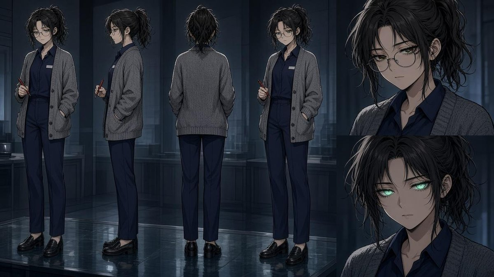
meng_xiu · รวม jade_eyeบันทึกล็อก (LOCK)
LOCK: Meng Xiu (appraiser, D-rank)
Source: novel L163-179; bible.
- 24, messy loose ponytail (black), round wire glasses that sit low on the tip of the nose in panels, grey knitted cardigan over navy association uniform, small blank badge, red pen, black loafers.
- Normal eyes dark brown. [ตาหยก] = glasses OFF, eyes glow pale jade green (lower close-up).
- Never purple. Top close-up irises recoloured locally from green to brown (green only when the skill is on).

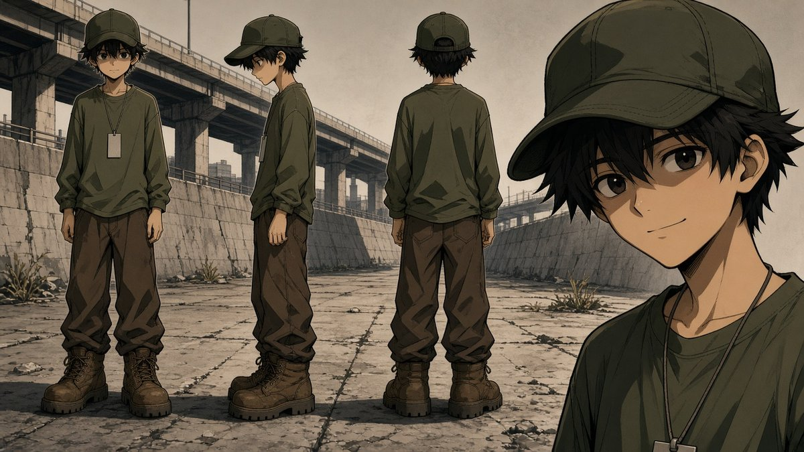
a_zhuบันทึกล็อก (LOCK)
LOCK: A-Zhu (E-rank porter)
Source: novel L257; bible.
- 16 (license says 18), skinny, messy black hair, olive long-sleeve shirt, brown trousers, blank tag on a cord (the "age 18" is lettered at assembly when needed).
- SAME olive baseball cap in every panel, too big for his head; brown lace-up boots far too big.
- No backpack. Never purple.
- Rejected: v1 (cap fits, backpack), v2 (hat changes between views).

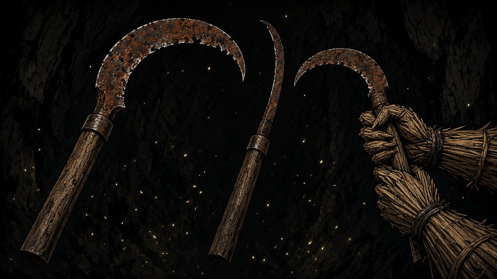
rusty_sickleบันทึกล็อก (LOCK)
LOCK: Rusty sickle
Source: novel L12, L373.
- Long weathered wooden handle (about an arm's length), metal collar, large crescent iron blade covered in orange-brown rust, chipped edge, hooked sharp tip.
- Held in two straw hands. When it pierces Zuo Mo it enters from BEHIND; only the rusty tip shows under the ribs; no open wound, no gore.

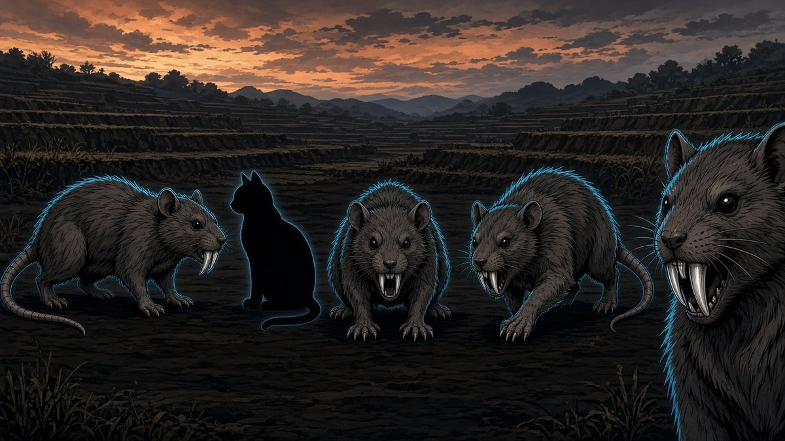
field_rat_yaoบันทึกล็อก (LOCK)
LOCK: Iron-tooth field rat yao (หนูนาเขี้ยวเหล็ก)
Sheet: field_rat_yao_v1.jpg. Source: novel L281.
- Exactly house-cat sized (sheet shows a cat silhouette for scale). Grey-brown coarse fur, long bare segmented tail, small dark beady eyes.
- Two long SILVER metallic upper fangs, hard as iron nails; this is its only special feature.
- Habitat: abandoned dusk terraces inside the E-rank gate.
- Killed without gore: no blood sprays or entrails; corpses yield small grade-1 spirit stones per spirit_stones sheet.
- NEVER: glowing eyes, extra horns or spikes, larger than a cat, gore.

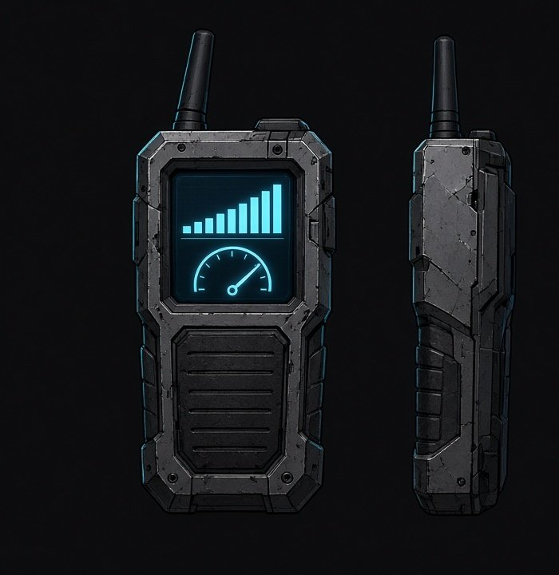
qi_meterบันทึกล็อก (LOCK)
LOCK: Cao Er's handheld qi meter (เครื่องวัดค่าปราณ)
Sheet: qi_meter_v1.jpg (device only; the in-use bowman in the raw output was off-model and is cropped away; use cao_er_ma_da_v1 for Cao Er). Source: novel L325 (he stares at the meter screen).
- Palm-sized rugged scuffed grey device, short black antenna, rubber grip ridges on the lower half.
- Small screen glowing cyan: a rising bar graph above a needle gauge. No readable numbers or letters in the art (values go in lettering).
- Held in one hand; screen glow lights the holder's face from below in dark scenes.
- NEVER: a smartphone, holograms, text on screen.

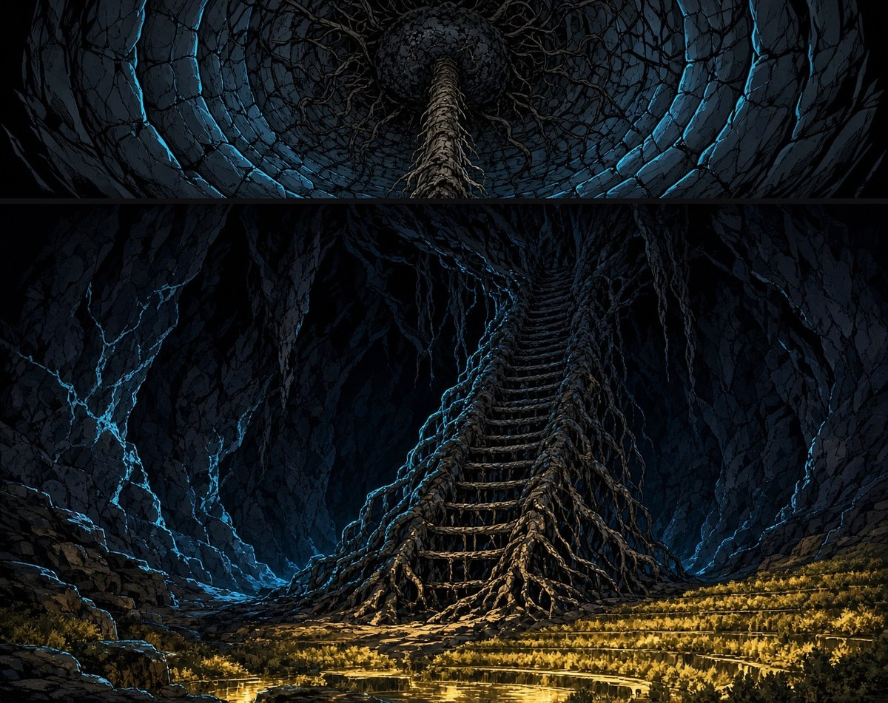
root_ladderบันทึกล็อก (LOCK)
LOCK: Black roots, sealed well mouth and root ladder
Sheet: root_ladder_v1.jpg (top: view up the well shaft; bottom: root ladder). Source: novel L461 (hundreds of black roots bind the hanging rope and drag it back up; the well mouth above is sealed with mud and roots), L571 and L637 (roots on the cavern wall below the well uncoil into a big root ladder that reaches the floor).
- Roots are black, gnarled, organic, with dangling tendrils.
- Well mouth: a solid plug of dark mud and tangled roots, no light through it.
- Root ladder: two thick gnarled root rails with uneven root rungs grown between them, hanging down the rock wall to the cavern floor at the field edge; lit gold from below.
- NEVER: a rope ladder, wooden rungs, outdoor sky or daylight in the cavern.

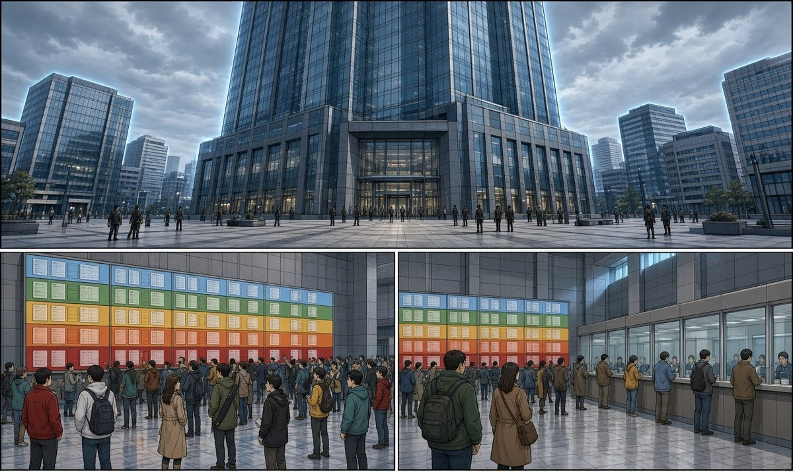
loc_associationบันทึกล็อก (LOCK)
LOCK: Hunter Association, Jianglin branch
Sheet: loc_association_v2.jpg (top: exterior from v1 render; bottom: v2 render with purple clothing recoloured to teal). Sources: ep01_novel.md L149 (Xiao Huang lands in front of the 30-storey glass building), L151 (ground-floor hall busy like a morning market; wall-sized notice board of new gates, E pale blue, D green ... A deep red); world_bible.md "แรงก์และโลก" (gate colours E pale blue, D green, C yellow, B orange, A red); script panels 23-24; solo_style_guide.md Tapas rules 6 (wide establishing + label), 27 (cool palette for the city), detail checklist 1 and 4.
- Exterior: very tall blue-tinted glass curtain-wall tower (30 storeys, rises out of frame), glass entrance doors, wide stone plaza, overcast grey-blue sky, mid-rise glass city around it.
- Hall: polished stone floor, grey stone/metal walls, long ceiling light strips. One whole wall is a notice board grid in colour bands: pale blue (E), green (D), yellow (C), orange (B), red (A). Cards are blank; any listing text is added at lettering.
- Other side of the hall: row of service windows behind glass (the appraisal windows; see loc_appraisal_counter).
- Crowd: varied ages, builds, hair, clothing colours, scattered in loose groups. Tiny plaza figures on the sheet are scale only; panels draw varied pedestrians.
- NEVER: anyone in Zuo Mo's purple, matching uniforms, readable text or logos in the art, fantasy architecture.

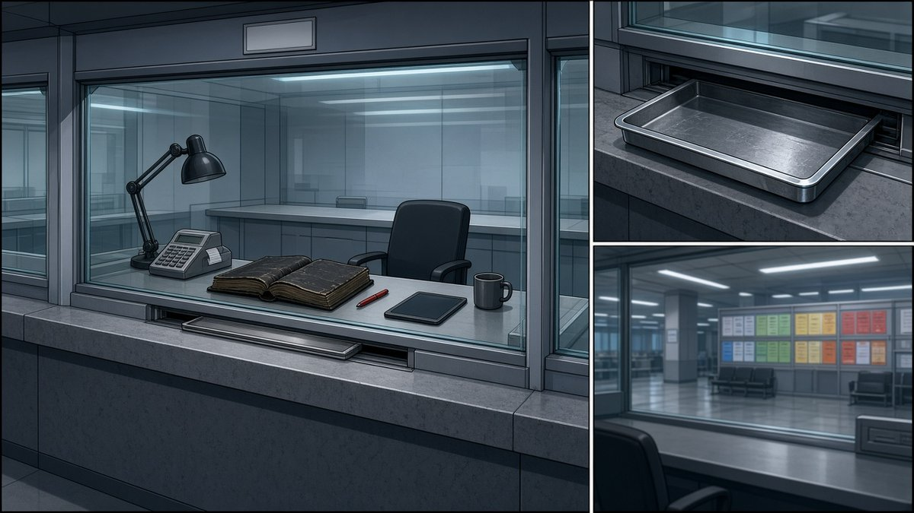
loc_appraisal_counterบันทึกล็อก (LOCK)
LOCK: Spirit-stone appraisal window No. 7
Sheet: loc_appraisal_counter_v1.jpg. Sources: ep01_novel.md L161 (appraisal counter, window seven), L163 (Meng Xiu sits behind glass), L169 (stone set down on the tray), L187 (she presses the calculator and sticks a small slip on the tray); script 25-33 (glass, tray, receipt with red "1", thick debt ledger and red pen in panel 32, tablet in panel 33); meng_xiu_LOCK.md (red pen); toad_glass_LOCK.md (steel appraisal tray); solo_style_guide.md detail checklist 1-2 and 5.
- Waist-high grey stone counter, thick clear glass partition, blank number plate above (the number 7 is lettered at assembly if needed).
- Low slot at the base of the glass with a shallow brushed-steel tray that slides under it.
- Behind the glass on the desk: black desk lamp (left), grey calculator with receipt printer, very thick worn dark ledger (open), red pen, dark tablet, grey mug; black office chair. Identical neighbouring windows on both sides.
- Cool fluorescent light, glass reflections.
- NEVER: text in the art, a cash drawer full of money, other staff at window 7.

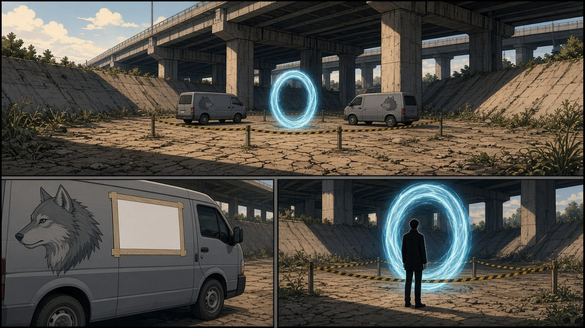
loc_hexi_bridge_gateบันทึกล็อก (LOCK)
LOCK: Rank-E gate under Hexi bridge
Sheet: loc_hexi_bridge_gate_v2.jpg. Sources: ep01_novel.md L231 (gate floats in the middle of the dried-up canal under the expressway bridge; pale-blue light ring about 3 m tall swirling slowly like a whirlpool; association tape; two grey vans with a grey wolf head painted on the side), L233 (recruiting sign: lettered at assembly), L235 (Peng Jun leans on a van); world_bible.md "แรงก์และโลก" (E gates are pale blue); script 34-42 (afternoon light, white margins); solo_style_guide.md Tapas rules 6, 15 (cold blue = portal).
- Dry concrete canal bed, cracked mud and weeds, sloped concrete banks, massive elevated expressway with square pillars overhead; afternoon sun slanting under it.
- Portal: vertical swirling ring of pale sky-blue light, about 3 m tall (about 1.7x an adult man, a little taller than the vans), dark swirl in the centre.
- Yellow-and-black barrier tape on waist-high posts around the ring.
- Two identical plain grey panel vans, grey wolf head painted on the side, blank white sign board taped on the van side (text lettered at assembly).
- The silhouette in the lower-right view is only a scale marker.
- NEVER: a portal taller than twice a man, water in the canal, night, more than two vans, readable text.
- Rejected: rejected/loc_hexi_bridge_gate_v1_gate_too_big.jpg.

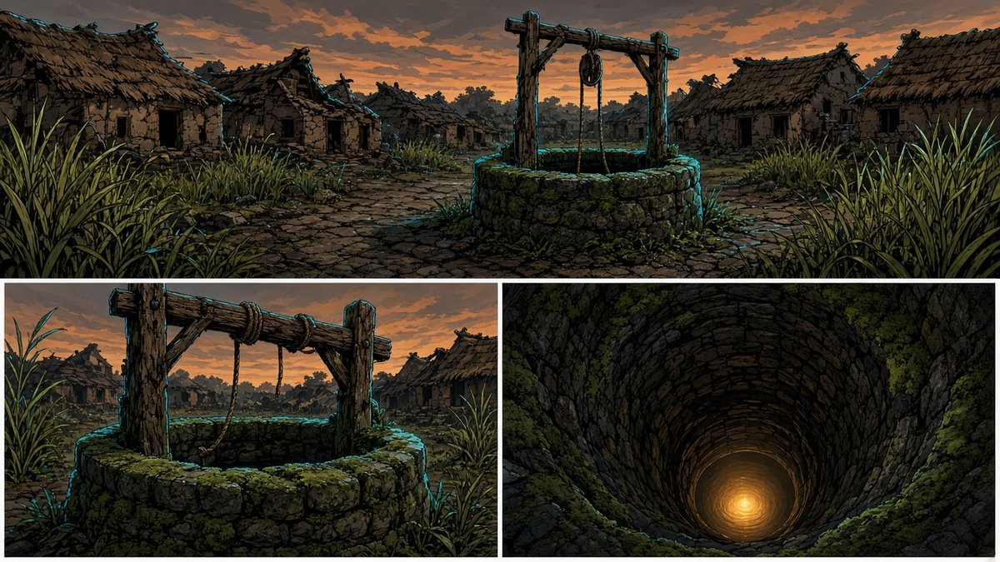
loc_wellบันทึกล็อก (LOCK)
LOCK: Village well inside the E-rank gate
Sheet: loc_well_v1.jpg. Source: novel L317; script for the well scenes.
- Village square of crumbling earthen houses with collapsed thatched roofs; wild rice taller than a man; endless orange-grey dusk sky.
- Old round stone well with a thick green-moss rim; a weathered wooden pulley frame over it; a broken rope hanging down into darkness.
- Looking down: a narrow round stone shaft with a warm gold glow far at the bottom.
- NEVER: a bucket, a roof over the well, blue sky, people living there.

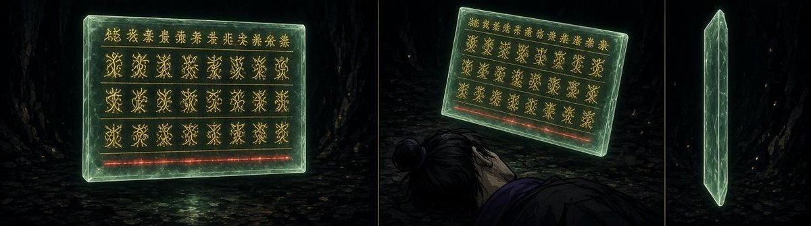
jade_windowบันทึกล็อก (LOCK)
LOCK: System window (ทะเลจิต)
Source: bible L24-29; novel L687, L704.
- Thin rectangular slab of pale green jade, ice-clear, bevelled edges, floats at eye level tilted ~15 degrees, casts soft green light on his face.
- Gold root-shaped glyphs (unreadable in art; Thai text is lettered at assembly), darker gold heading row, the bottom service-fee row glows RED.
- Sheet cropped to the three window views; the figure in the over-head view is not a face reference (use zuomo_turn_v2 for faces).

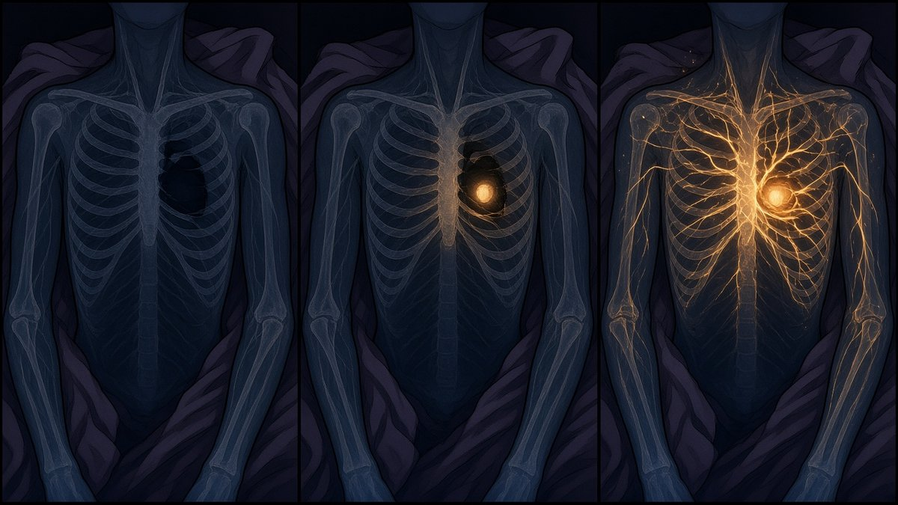
heart_warmthบันทึกล็อก (LOCK)
LOCK: Warmth from the heart (x-ray insert)
Sheet: heart_warmth_v1.jpg (3 states). Sources: /workspace/story.txt L1730-1731 (a gentle warm current suddenly pours out from deep in Zuo Mo's heart and rushes into his meridians); ep01_novel.md L683 (a warm current from deep in the heart flows into meridians that are going cold); world_bible.md "ความสามารถตัวละคร > จั่วม่อ > ไออุ่นจากหัวใจ" (warm orange light from heart into meridians; uncontrollable, near death only); script 89 (INS chest x-ray, SFX heartbeat); manhwa-panel-qc skill section 5 (organic branching effects, subtle); solo_style_guide.md Tapas rule 15 (warm orange = healing) and rule 16.
- Dark navy translucent x-ray of a gaunt bony chest (pale-blue rib, sternum, collarbone outlines) with a faint dark purple robe outline.
- State 1: meridians cold grey-blue and dim. State 2: a small warm orange-gold glow wells up inside the heart. State 3: the warm orange current spreads along thin organic branching lines into chest, shoulders and arms, with tiny warm particles; cold blue retreats to the fingertips.
- NEVER: fire, lightning, straight laser lines, blood or wounds, a face, text.

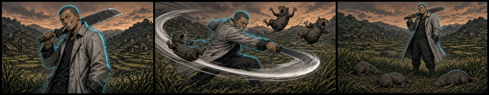
skill_peng_macheteบันทึกล็อก (LOCK)
LOCK: [ฟันพร้าวงกว้าง] Peng Jun's wide machete sweep (weapon technique, no hand seal)
Sheet: skill_peng_machete_v2.jpg (3 beats, composite of panels 1-3 of the v2 render; its panel 4 was dropped because the blade shrank to knife size). Sources: ep01_novel.md L281 (each sweep takes three rats), L235 (look); world_bible.md ความสามารถตัวละคร (เผิงจวิ้น row); ep01_script.md panel 45; solo_style_guide.md §4-5; refs peng_jun_v1, field_rat_yao_v1, loc_gate_village_v1. 1 build-up: machete drawn, resting on shoulder, grin, cigarette. 2 wide diagonal sweep: grey-silver arcing trail + speed lines, EXACTLY three cat-sized rats knocked away. 3 result: three rats lying still, machete on shoulder.
- Machete is BIG (blade roughly forearm-to-elbow length plus, wide single edge) in every panel. Gold canine on HIS left only. Light-grey worn leather long coat.
- No blood, no gore. Trail colour grey-silver is a visual proposal (novel gives none); never elemental colours.
- Cutting the scarecrow in half (panel 69c) uses skill_scarecrow_reap_v1 panel 4 for the halves + regrowth, with Peng from this sheet.
- Rejected: rejected/skill_peng_machete_v1_scarecrow_face_4rats.jpg, rejected/skill_peng_machete_v2raw_p4_small_blade.jpg.

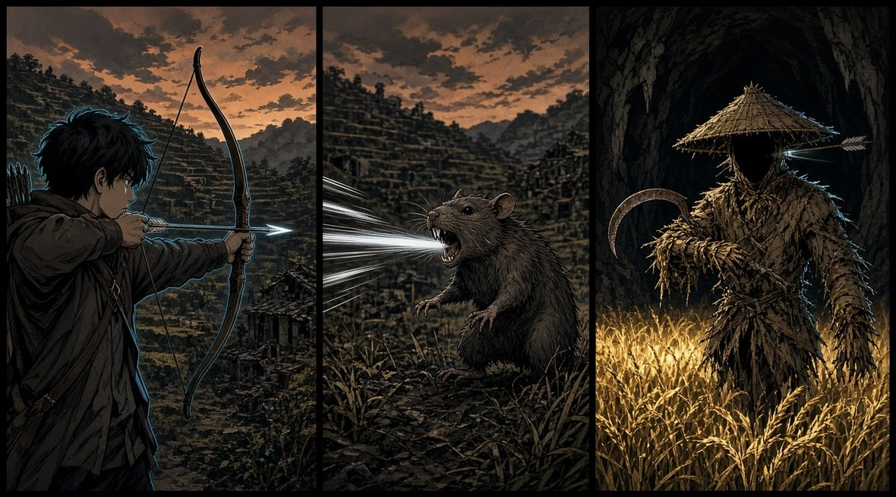
skill_cao_arrowบันทึกล็อก (LOCK)
LOCK: [ศรไม่พลาด] Cao Er's never-miss arrow
Sheet: skill_cao_arrow_v2.jpg (composite: panels 1-2 from the v1 render, panel 3 from the v2 render). Sources: ep01_novel.md L281 (arrows never miss), L451 (arrow goes through the scarecrow's head, through the darkness under the hat and out the other side; nothing happens, it keeps walking); world_bible.md ความสามารถตัวละคร (เฉาเอ้อร์ row: cannot hurt things without flesh); ep01_script.md panel 69a; refs cao_er_ma_da_v1, scarecrow_v1, field_rat_yao_v1, loc_gate_village_v1. 1 draw: full draw, calm aim, ordinary wooden arrow. 2 hit: faint pale light streak, rat hit from afar, no blood. 3 no effect: arrow passes through the black void under the scarecrow hat and sticks out the far side; scarecrow unharmed, still walking.
- Faint pale light streak is a visual proposal. Plain wooden arrows, recurve bow, hooded brown-grey jacket, messy black hair.
- Scarecrow keeps NO face, only darkness under the hat.
- Rejected: rejected/skill_cao_arrow_v1raw_arrow_not_through_head.jpg, rejected/skill_cao_arrow_v2raw_stone_city_bg.jpg (stone-city background is not the gate village).

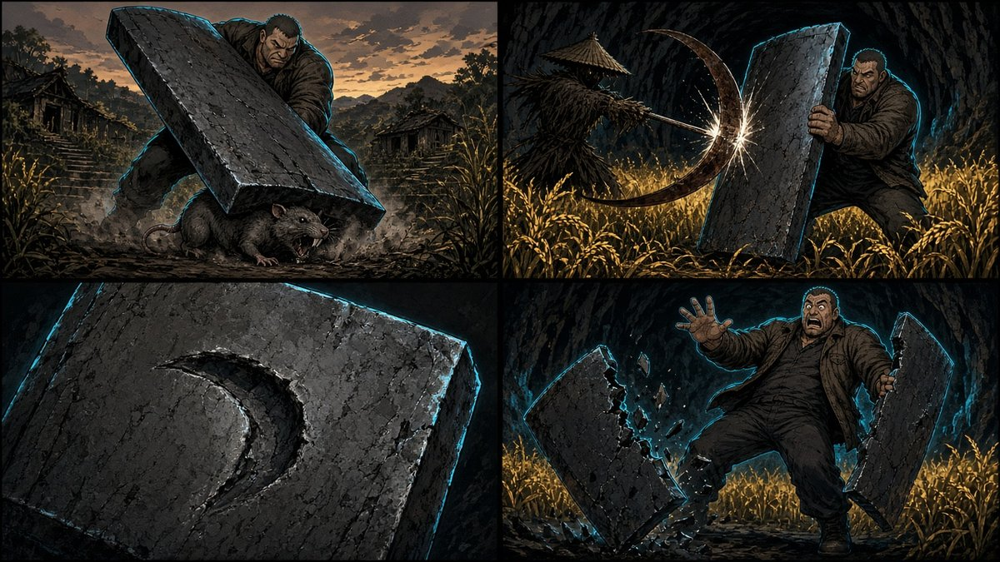
skill_ma_shieldบันทึกล็อก (LOCK)
LOCK: [โล่ภูผา] Ma Da's iron shield
Sheet: skill_ma_shield_v1.jpg (4 beats). Sources: ep01_novel.md L281 (bashes rats one at a time like swatting flies), L453 (blocks one sickle hit with a loud clang, the three-inch-thick iron shield gets a deep dent; second hit splits it in two); world_bible.md ความสามารถตัวละคร (หม่าต้า row: cannot take more than two heavy hits); ep01_script.md panel 69b (SFX เคร้ง! / แคร่ก!); refs cao_er_ma_da_v1, rusty_sickle_v1, scarecrow_v1, field_rat_yao_v1. 1 slam the flat rectangular iron slab shield onto a rat, dust, no blood. 2 block the rusty sickle, sparks. 3 close-up: one deep crescent dent. 4 second hit: the shield split into two halves, Ma Da staggering back.
- Shield: thick dark-grey iron rectangle as in cao_er_ma_da_v1. Dark brown work jacket, short hair, giant build.
- No gore. Scarecrow faceless under the hat.